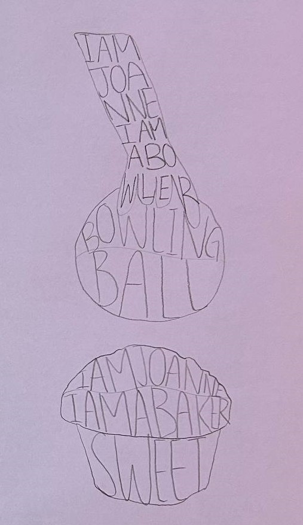
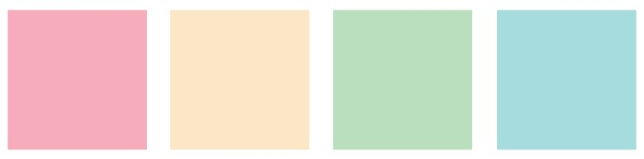
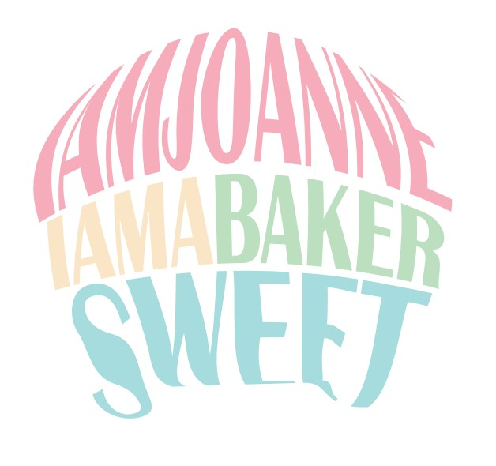
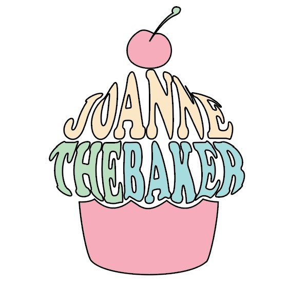

I chose a muffin for this design because baking is something I truly love—it’s my favorite way to get creative and bring a little happiness into the world. Muffins are comforting, playful, and full of character, which inspired the personality behind my design. I wanted this piece to capture not just the sweetness of the baked good itself, but also the warmth, care, and joy that comes from making something by hand. To me, this design is a small reflection of the love and creativity I pour into every baking moment.
I began the design process by creating a series of hand-drawn sketches to explore different object shapes and concepts. These sketches allowed me to experiment with form, proportion, and how typography could interact with each shape. By testing multiple ideas, I was able to evaluate which concept best reflected my personal connection to baking. Through this exploration, the muffin concept stood out as the most expressive and emotionally resonant. I then refined this idea digitally using Adobe Illustrator, focusing on clean vector shapes and soft curves to maintain a playful and welcoming appearance.

I chose the Copper typeface for my muffin design because it combines elegance with approachability—qualities I want my future bakery brand to reflect. The typeface’s more formal serif style conveys a sense of tradition, trustworthiness, and craftsmanship, which aligns with the concept of handmade, high-quality baked goods. Using Copper helps balance the playful illustration with a refined visual tone, creating a design that feels both warm and professional.
I chose soft pastel colours because they make me feel calm, happy, and emotionally balanced—qualities I wanted my design to reflect. Pastels have a gentle, soothing effect while still carrying the essence and depth of their original hues. Their light, soft nature creates a sense of harmony and warmth, making the overall palette feel inviting and cohesive. Using pastels allows me to convey a feeling of comfort and serenity, giving the design a gentle personality that resonates with how I feel when I create.

Through this project, I learned the importance of visual clarity and iteration in design. In my initial version, the muffin shape did not clearly read as a muffin, which highlighted how easily a concept can be misunderstood if form and proportions are not carefully considered. Based on this realization, I revisited my design and refined the shape to better communicate the intended object. This process taught me the value of feedback, refinement, and taking the time to improve a design so that it communicates clearly and effectively.

Initial Design — unclear muffin form

Final Design — refined shape and clarity